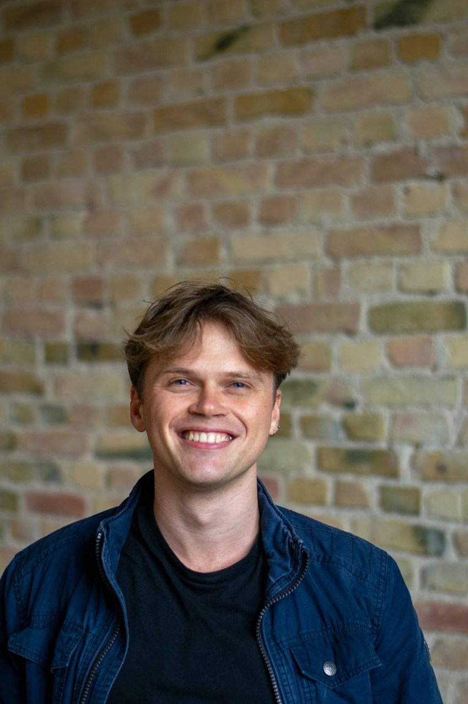

Welcome to my website.
My name is Amjad Saef. On this website, you can find information about my current and past endeavours, and in particular some more or less formal essays on intelligence and computation.

I am a mathematician by training and a programmer by vocation. In July 2026, I defended my dissertation, written under the supervision of Prof. Dr. Wilhelm Stannat at TU Berlin and the Berlin Mathematical School. Subsequently, I joined Danial Saef and Mohammad El-Ismail in co-founding Scrooge, a platform to track and act on risks and opportunities in digital asset markets.
More following soon!